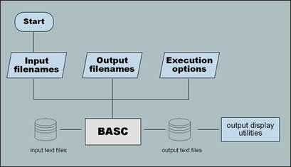
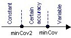

This bundle adjustment software processes images captured by frame analog and digital cameras. Supplemental data like GPS/INS and point-to-point distance measurements can be also incorporated.
BASC witnessed a dramatic revamping during its development cycle. The
software is comprised of modular and independent C++/MFC core garnished
with a standalone interface built in the new “MS.NET” development
environment:

Modularity and extensibility of BASC were always a vital concern during its development. Object oriented design is fully adopted and C++/MFC Classes are the basic building blocks for its functionality. These classes are further divided into methods and properties that serve as lower level sub-task implementation units. BASC has separate classes to handle camera information, orientation of images, points measured on images, ground points, GPS/INS information, and pre-known distances between object space points. A special math library embedded with the program carries out mathematical processing of involved matrices.
The BASC code is enhanced with more context-sensitive messages that enlighten
the user about some run-time errors or data impurities/blunders. To prepare
the input data for the program, which is furnished through standard ASCII
files, information from the involved cameras, images, control/tie points,
etc. is first gathered and formatted. Such information is divided between
a number of separate text files to avoid ambiguity and enhance flexibility
and variety in use. These files are interactively specified to the program
during the execution session. Certain input files may not be required
for a particular application based on the options selected in the main
controlling data input file, namely, the Project
File.
Follow the links for full description of the structure of input and output files.
The interface allows for easier specification of input files where last
minute editing and tweaking can be easily performed. After concluding
the computation phase, output browsing and inspection both textually or
visually became a breeze. The interface links the user to an easy-to-update
background literature and help system implemented in the form of webpage
dedicated for this purpose. Click here
for more details and snapshots of the interface.
Due to the specific nature of gathered input information, BASC has the
capacity to treat the involved parameters either as:
• Constants (perfectly known quantities),
• Parameters with prior knowledge of certain accuracy, or
• Variables (unknowns).

This is done through setting threshold variances in the main project file. The dispersion of the parameters is specified in the relevant data file, specifically:
For more details on this subject, please see the Project File help section.